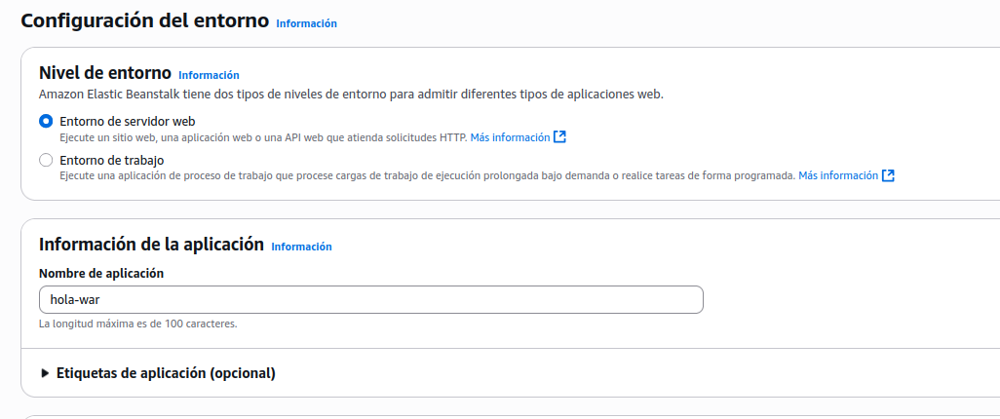

Mi primer despliegue en AWS Elastic Beanstalk
En esta práctica aprenderás a publicar una aplicación Java sencilla en Elastic Beanstalk (EB) usando la consola web de AWS.
Al final tendrás una URL pública con tu app en la nube. üöÄ
Objetivo
- Generar un proyecto Spring Boot WAR.
- Verlo en local.
- Empaquetar el
.wary subirlo a Elastic Beanstalk (Tomcat). - Abrir la URL pública y comprobar el Hola Mundo.
1) Crear el proyecto en Start.Spring.io
- Abre https://start.spring.io
- Selecciona:
- Project: Maven
- Language: Java
- Spring Boot: 3.x
- Packaging: War
- Java: 17
- Group:
com.example - Artifact:
hola-war - Name:
hola-war - Package name:
com.example.holawar - Dependencies:
Spring Web - Pulsa Generate → se descargará
hola-war.zip.
2) Descomprimir y abrir
Ahora que tenemos el proyecto descargado, vamos a descomprimirlo y abrirlo en nuestro editor de código para empezar a trabajar con él. Si tienes Windows puedes hacerlo con click derecho y descomprimir.
Estructura inicial (resumen):
3) Añadir clase Controller
Nuestro proyecto aún no muestra nada. Vamos a crear un controller muy sencillo que responda con un mensaje cuando entremos en la aplicación.
HelloController
Crea el archivo HelloController.java en la siguiente ruta: src/main/java/com/example/holawar/HelloController.java:
package com.example.holawar;
import org.springframework.web.bind.annotation.GetMapping;
import org.springframework.web.bind.annotation.RestController;
@RestController
public class HelloController {
@GetMapping("/")
public String hello() {
return "Hola mundo desde WAR en Tomcat (Elastic Beanstalk)!";
}
}
4) Probar en local
Una vez creado el controlador, es buen momento para probar la aplicación en nuestro ordenador. Así confirmamos que funciona antes de empaquetarla y subirla a la nube.
Opción A: Terminal / Maven (CLI)
Usa el wrapper o Maven instalado:
Abre http://localhost:8080 → debería verse el texto.
¿Por qué spring-boot:run?
Al empaquetar como WAR con Tomcat en scope provided, ejecutar java -jar target/*.war no siempre funciona. Para pruebas locales, usa spring-boot:run.
Opción B: IntelliJ IDEA
-
Run desde la clase principal: abre
HolaWarApplication.java, haz clic derecho → Run 'HolaWarApplication.main()'. -
Alternativa: Run → Edit Configurations… → + → Spring Boot y selecciona la clase
com.example.holawar.HolaWarApplication→ Run. - (Opcional) También puedes usar la ventana Maven (icono del vaso) → Plugins → spring-boot → spring-boot:run.
- Abre http://localhost:8080 en tu navegador → debería verse el texto.
5) Empaquetar el .war
Cuando ya sabemos que funciona en local, necesitamos generar un archivo .war. Este archivo contiene nuestra aplicación lista para desplegar en un servidor Tomcat, como el que ofrece AWS Elastic Beanstalk.
Opción A: Maven / CLI
Se genera en:
Opción B: IntelliJ IDEA (Build Artifact)
- Abre el proyecto
hola-waren IntelliJ IDEA. - Ve a Build → Build Project (Ctrl/Cmd + F9) para compilar.
-
Ahora Build → Build Artifacts…
-
Selecciona
hola-war:war. - Pulsa Build.
- El archivo
.waraparecerá entarget/hola-war-0.0.1-SNAPSHOT.war.
Asegúrate de que el proyecto empaqueta como WAR
En pom.xml debe estar <packaging>war</packaging> y el plugin de Spring Boot configurado. Esto ya viene así si lo generaste desde start.spring.io con Packaging: War.
6) Desplegar en AWS Elastic Beanstalk (Tomcat)
Con el .war generado, ya podemos dar el salto a la nube. Vamos a crear una aplicación en Elastic Beanstalk, subir nuestro archivo y obtener una URL pública para comprobar que funciona.
- Entra en la Consola de AWS → busca Elastic Beanstalk → Create application.

- Application name:
hola-war
 - Platform: Tomcat → Corretto 17, Amazon Linux 2
- Application code: Upload your code → sube
target/hola-war-0.0.1-SNAPSHOT.war

- Roles IAM: selecciona los que aparecen por defecto en los desplegables.

- Las siguientes pantallas de configuración son opcionales, déjalas como están por defecto y pulsa siguiente.
- Create environment (Web server).
- Espera a Health: OK y haz clic en la URL que muestra EB.

Deberías ver: “Hola mundo desde WAR en Tomcat (Elastic Beanstalk)!”

7) Cambiar el mensaje y volver a desplegar (OPCIONAL)
El despliegue inicial suele ser solo una primera versión. Vamos a modificar el mensaje de la aplicación y repetir el proceso de compilación y despliegue para ver cómo se actualiza en AWS.
Edita HelloController.java:
Compila y despliega de nuevo:
Opción B: IntelliJ IDEA (Build Artifact)
- Abre el proyecto en IntelliJ.
- Ve a Build → Build Artifacts…
- Selecciona hola-war:war.
- Pulsa Build (o Rebuild para forzar).
- El .war actualizado estará en target/ (o en out/artifacts/ si configuraste otra ruta).
- En Elastic Beanstalk → Upload and deploy → sube ese nuevo .war.
8) Solución de problemas
A veces algo falla. En este apartado encontrarás consejos para diagnosticar y resolver los errores más comunes al ejecutar o desplegar la aplicación.
502 Bad Gateway / Health rojo
- Revisa que la plataforma es Tomcat (Corretto 17), no Java SE.
- Saca Logs → Request logs → Last 100 lines y mira
catalina.out/web.stderr.log.
No arranca en local
- Usa
mvn spring-boot:run(o./mvnw spring-boot:run). - Comprueba
java -version= 17.
Generé con Java 21
- EB Tomcat usa Corretto 17 → reconstruye el proyecto con Java 17.
9) Limpieza (evitar costes)
Cuando terminamos de practicar, es importante borrar el entorno de Elastic Beanstalk. Así evitamos que la cuenta de AWS siga generando gastos innecesarios.
En Elastic Beanstalk → tu entorno → Actions → Terminate environment.
(Opcional: elimina la Application y el bucket S3 si no la vas a reutilizar.)